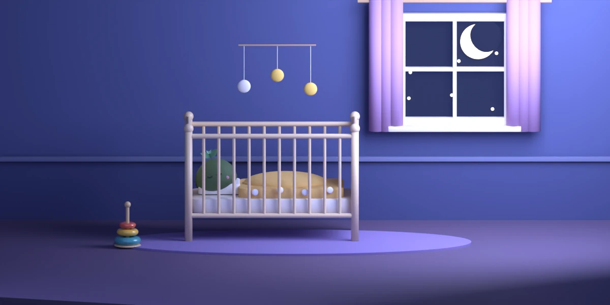
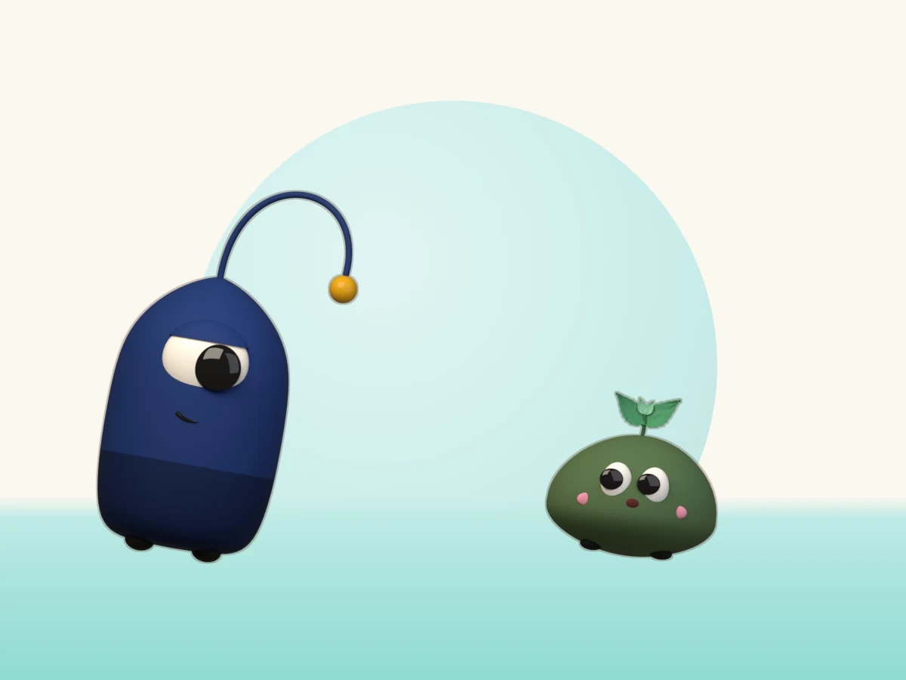
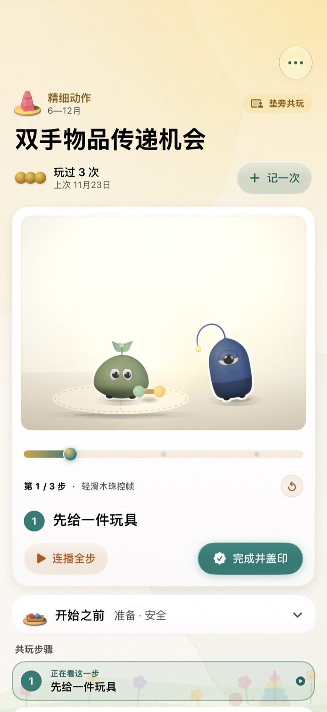
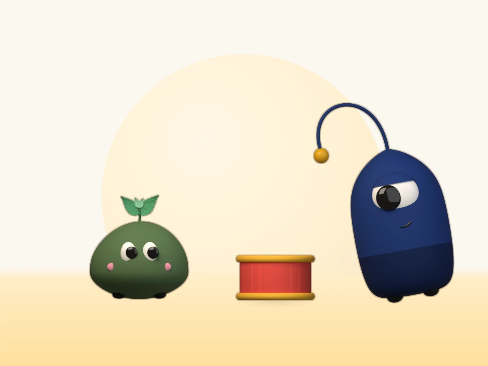
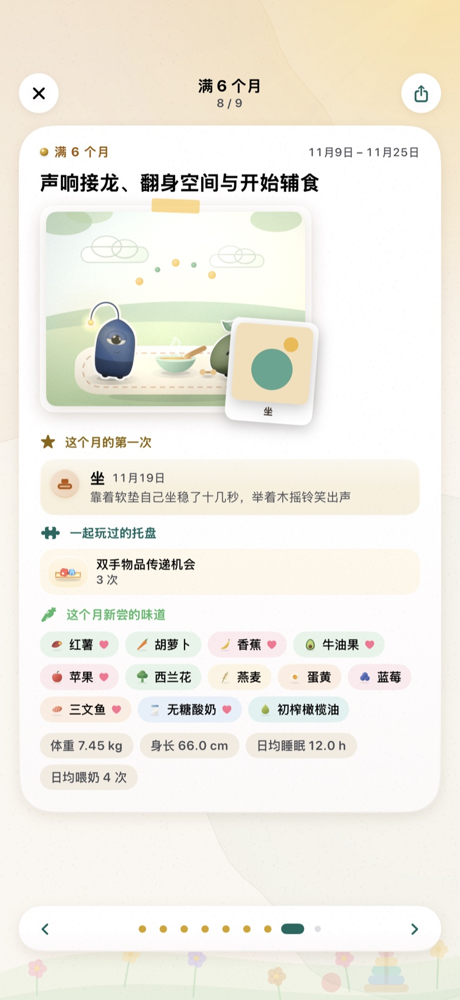
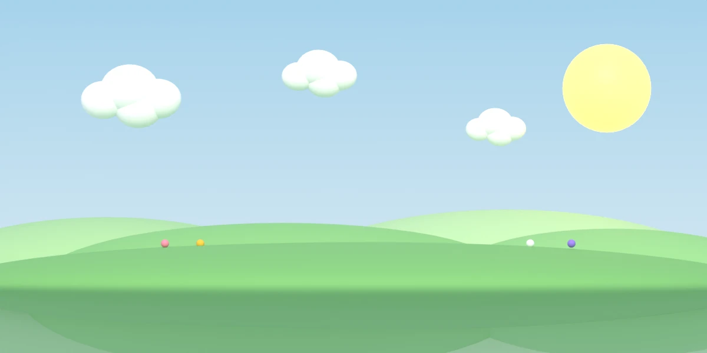

拿手边的东西就能玩
不需要买整套昂贵教具。一块软布、两只木碗或一面镜子，顺着宝宝当前的发育重点每周推荐恰当游戏。
一套为 0–36 个月家庭准备的安静 iPhone 应用。每天打开，不用翻无数育儿帖子，就有贴合宝宝月龄的居家小游戏、凌晨单手不刺眼的床头夜灯，以及绝不上传云端的纯离线成长纪念。
专为 iPhone 打造 · 零账号纯离线 · 支持中英双语


没有比较焦虑，也没有需要天天打卡的清单。每次拿起手机，只为你手边此刻的陪伴留出安静答案。
不需要买整套昂贵教具。一块软布、两只木碗或一面镜子，顺着宝宝当前的发育重点每周推荐恰当游戏。
关灯后整屏沉入深海蓝与暖琥珀柔光，大拇指一按即可记下喂奶与入睡，无声掌心轻拍节律帮助安抚入眠。
60 种初尝食物观察、生长百分比曲线、拍立得「第一次」与写给三岁宝宝的火漆信，全部只存放在你自己的手机里。
告别点几十次「下一步」的机械步骤卡片。单指轻滑下方的桦木小珠，绘本里的人物与动作就会像真翻书一样流畅演给你看。

用缓慢温和的面孔靠近、追视晃动与轻柔歌谣，陪新生儿从容建立第一份安全感。


顺着视野伸出小手够取木环，锻炼平衡感。

跟着宝宝的指尖节奏停下来，一遍遍命名。

在平行的游戏角落里学会等待与交换小物。

把「停、看、走」演成有趣的居家过马路。

不鼓励让孩子独自看屏幕，而是父母把手机平放在身边一起敲木琴、晃动雨声木珠棒、用手指把垂耳兔和飞鸟纸偶投射到墙壁影子里，实时附上绿色护耳音量标尺。


不需要成为数据表格专家。记录只在你需要回顾时发挥作用，环形节律盘会把睡眠弧、喂奶时间和玩耍分布温和地摆在眼前。
夜深了，单手抱着睡得轻浅的宝宝时，手机屏幕最怕突然亮得刺眼。打开台灯页面，暖黄灯光刚好够你看清指尖所在。


不用花精力修图配文案。每次拍下小满稳稳坐住、尝了第一口牛油果或收到半岁信件，成长画卷都会安安静静地替你留住它。

从草地、森林小丘走到小河村庄，只展开你想看的那一段，不必在漫长的列表里上下迷失。

收拢当月「第一次」贴纸、共玩过的活动次数、尝过的新味道与生长均数，一眼温暖回望。

把今晚疲惫又微甜的碎碎念封入金色火漆，静候约定的生日或纪念日到来时轻轻拆开。



在生命的头三年里，每一次温柔的注视和接话，都在帮孩子搭起理解世界的底座。
我们把公开、严谨的儿保参考整理为轻巧可行的家庭陪伴指引；摸索台灯不作医疗诊断或发育筛查，一切临床判断以儿科医生意见为准。
没有服务器数据库，就不存在泄漏风险。我们看不到你的宝宝叫什么名字、几点睡着或拍了哪一张照片。
关于年龄、画风、早产月龄以及更换手机转移数据的简要说明。
不用。你可以先跳过一切个人资料或拒绝授权存储，照样浏览全套 0–36 个月游戏灵感和夜灯安抚；等你想开始记录时再随时填入。
只要填入宝宝的出生孕周，应用就会遵照儿科学会建议自动换算矫正月龄，让每项俯卧、坐姿或伸手游戏贴合实际发育步调。
完全一致。两种画风共享全部 46 套亲子活动、月龄封面与日常道具，在首页拉动金色灯珠就能瞬间换装。
既可通过手机自带的 iCloud 整机备份无痛迁移，也可以随时在应用内「工坊 › 离线数据与备份」导出完整便携备份文件保存，并一键恢复至新设备。
不会。摸索台灯只是家庭日常陪伴与记录助手，不是医疗器械。如有健康或发育疑虑，请务必前往正规医疗机构咨询儿科医生。